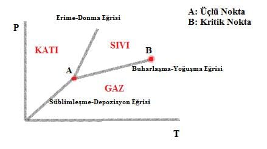

Günün küçük bilgisi: Termodinamiksel olarak sıvı ve gaz "ayrı fazlar" değillerdir! Başka bir deyişle, teknik detayında sıvı ve gaz aslında aynı şeydir!
Günlük yaşantımızda maddenin halleri diye maddenin nasıl davrandığına bakarak ayrımlar yaparız: akışkan değilse katı, akışkansa ama hacmi sabitse sıvı, bulunduğu ortamın hacmini alıyorsa da gaz! Bu ayrım Aristo’nun bitkileri otlar çalılar ve ağaçlar diye sınıflandırması gibidir.
Fiziksel olarak maddelerin fazlarını, maddelerin moleküler düzeyde sağladıkları simetrilere bakarak yaparız. Ya da daha günlük hayata yakın bir dilde, iki fazın maddenin farklı hali olabilmesi için, o iki faz arasında bir "geçiş" olması gerekmektedir!
Katı ve sıvı arasında bu geçiş bildiğimiz erimedir. Belirli bir basınçta buzun eriyeceği sıcaklık bellidir, ve asla bir buz erimeden su haline gelemez.
Aynı şeyin sıvı ve gaz arasında da olduğunu düşünebilirsiniz: kaynama! Gerçekten de, kaynama bir faz geçişidir, ve eğer ki bir suyun kaynamadan gaz haline geçmesi mümkün değilse , su ve gaz iki farklı faz diyebiliriz!
Fakat suyu kaynatmadan gaz haline getirmek mümkün! Burada kastettiğim suyun kaynamadan da buharlaşması değil, bu kısmen ilintili de olsa başka bir konu. Suyu kaynatmadan gaz haline getirebilmemizin mümkün olmasını sebebi, kaynama diye ifade ettiğimiz olayın belirli bir sıcaklıktan sonra artık olmaması!
Bunu faz diagramları ile görmek oldukça kolay. Ekteki resimde görüldüğü gibi katı hal sıvı ve gaz halden her zaman bir çizgi ile ayrılmıştır. Fakat sıvı ve gaz halleri ayıran çizgi B noktasında biter, yani B noktasının sağından dolaşarak sıvıyı gaza kaynatmadan dönüştürmek mümkündür.
Kısacası kapalı bir kabı suyla doldurun. Kaptaki basıncı odadaki basıncın 300
katına çıkarın. Daha sonra 400 dereceye kadar ısıtın. 400 derecedeyken basıncı
oda basıncına düşürün. Daha sonra da oda sıcaklığına geri soğutun. Artık
elinizde su buharı var. Ve bu süreci yavaşça yaparsanız, hiçbir noktada net
bir faz değişimi olduğunu gözlemlemeyeceksiniz. Çünkü özünde, sıvı ve
gaz aynı fazın farklı halleri!
